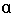
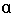

volatile
求助编辑百科名片
编辑本段volatile的作用
volatile的作用: 作为指令关键字,确保本条指令不会因编译器的优化而省略,且要求每次直接读值. 简单地说就是防止编译器对代码进行优化.比如如下程序: XBYTE[2]=0x55; XBYTE[2]=0x56; XBYTE[2]=0x57; XBYTE[2]=0x58; 如果对外部硬件上述四条语句分别表示不同的操作,会产生四种不同的动作,那么编译器就不能像对待纯粹的程序那样对上述四条语句进行优化只认为XBYTE[2]=0x58;而忽略前三条语句(即只产生一条机器代码),此时编译器会逐一的进行编译并产生相应的机器代码(四条).编辑本段volatile变量的几个例子
推荐一个定义为volatile的变量是说这变量可能会被意想不到地改变，这样，编译器就不会去假设这个变量的值了。精确地说就是，优化器在用到这个变量时必须每次都小心地重新读取这个变量的值，而不是使用保存在寄存器里的备份。下面是volatile变量的几个例子： 1). 并行设备的硬件寄存器（如：状态寄存器） 2). 一个中断服务子程序中会访问到的非自动变量(Non-automatic variables) 3). 多线程应用中被几个任务共享的变量 回答不出这个问题的人是不会被雇佣的。我认为这是区分C程序员和嵌入式系统程序员的最基本的问题。嵌入式系统程序员经常同硬件、中断、RTOS等等打交道，所用这些都要求volatile变量。不懂得volatile内容将会带来灾难。 假设被面试者正确地回答了这是问题（嗯，怀疑是否会是这样），我将稍微深究一下，看一下这家伙是不是真正懂得volatile完全的重要性。 1). 一个参数既可以是const还可以是volatile吗？解释为什么。 2). 一个指针可以是volatile 吗？解释为什么。 3). 下面的函数有什么错误： int square(volatile int *ptr) { return *ptr * *ptr; } 下面是答案： 1). 是的。一个例子是只读的状态寄存器。它是volatile因为它可能被意想不到地改变。它是const因为程序不应该试图去修改它。 2). 是的。尽管这并不很常见。一个例子是当一个中断服务子程序修改一个指向一个buffer的指针时。 3). 这段代码是个恶作剧。这段代码的目的是用来返指针*ptr指向值的平方，但是，由于*ptr指向一个volatile型参数，编译器将产生类似下面的代码： int square(volatile int *ptr) { int a,b; a = *ptr; b = *ptr; return a * b; } 由于*ptr的值可能被意想不到地改变，因此a和b可能是不同的。结果，这段代码可能返不是你所期望的平方值！正确的代码如下： long square(volatile int *ptr) { int a; a = *ptr; return a * a; } 讲讲我的理解： （欢迎打板子...~~！） 关键在于两个地方： 1. 编译器的优化 (请高手帮我看看下面的理解) 在本次线程内, 当读取一个变量时，为提高存取速度，编译器优化时有时会先把变量读取到一个寄存器中；以后，再取变量值时，就直接从寄存器中取值； 当变量值在本线程里改变时，会同时把变量的新值copy到该寄存器中，以便保持一致 当变量在因别的线程等而改变了值，该寄存器的值不会相应改变，从而造成应用程序读取的值和实际的变量值不一致 当该寄存器在因别的线程等而改变了值，原变量的值不会改变，从而造成应用程序读取的值和实际的变量值不一致 举一个不太准确的例子： 发薪资时，会计每次都把员工叫来登记他们的银行卡号；一次会计为了省事，没有即时登记，用了以前登记的银行卡号；刚好一个员工的银行卡丢了，已挂失该银行卡号；从而造成该员工领不到工资 员工 －－ 原始变量地址 银行卡号 －－ 原始变量在寄存器的备份 2. 在什么情况下会出现(如1楼所说) 1). 并行设备的硬件寄存器（如：状态寄存器） 2). 一个中断服务子程序中会访问到的非自动变量(Non-automatic variables) 3). 多线程应用中被几个任务共享的变量 补充： volatile应该解释为“直接存取原始内存地址”比较合适，“易变的”这种解释简直有点误导人； “易变”是因为外在因素引起的，象多线程，中断等，并不是因为用volatile修饰了的变量就是“易变”了，假如没有外因，即使用volatile定义，它也不会变化； 而用volatile定义之后，其实这个变量就不会因外因而变化了，可以放心使用了； 大家看看前面那种解释（易变的）是不是在误导人 －－－－－－－－－－－－简明示例如下：－－－－－－－－－－－－－－－－－－ volatile关键字是一种类型修饰符，用它声明的类型变量表示可以被某些编译器未知的因素更改，比如：操作系统、硬件或者其它线程等。遇到这个关键字声明的变量，编译器对访问该变量的代码就不再进行优化，从而可以提供对特殊地址的稳定访问。 使用该关键字的例子如下： int volatile nVint; >>>>当要求使用volatile 声明的变量的值的时候，系统总是重新从它所在的内存读取数据，即使它前面的指令刚刚从该处读取过数据。而且读取的数据立刻被保存。 例如： volatile int i=10; int a = i; ... //其他代码，并未明确告诉编译器，对i进行过操作 int b = i; >>>>volatile 指出 i是随时可能发生变化的，每次使用它的时候必须从i的地址中读取，因而编译器生成的汇编代码会重新从i的地址读取数据放在b中。而优化做法是，由于编译器发现两次从i读数据的代码之间的代码没有对i进行过操作，它会自动把上次读的数据放在b中。而不是重新从i里面读。这样一来，如果i是一个寄存器变量或者表示一个端口数据就容易出错，所以说volatile可以保证对特殊地址的稳定访问。 >>>>注意，在vc6中，一般调试模式没有进行代码优化，所以这个关键字的作用看不出来。下面通过插入汇编代码，测试有无volatile关键字，对程序最终代码的影响： >>>>首先，用classwizard建一个win32 console工程，插入一个voltest.cpp文件，输入下面的代码： >> #i nclude <stdio.h> void main() { int i=10; int a = i; printf("i= %d",a); //下面汇编语句的作用就是改变内存中i的值，但是又不让编译器知道 __asm { mov dword ptr [ebp-4], 20h } int b = i; printf("i= %d",b); } 然后，在调试版本模式运行程序，输出结果如下： i = 10 i = 32 然后，在release版本模式运行程序，输出结果如下： i = 10 i = 10 输出的结果明显表明，release模式下，编译器对代码进行了优化，第二次没有输出正确的i值。下面，我们把 i的声明加上volatile关键字，看看有什么变化： #i nclude <stdio.h> void main() { volatile int i=10; int a = i; printf("i= %d",a); __asm { mov dword ptr [ebp-4], 20h } int b = i; printf("i= %d",b); } 分别在调试版本和release版本运行程序，输出都是： i = 10 i = 32 这说明这个关键字发挥了它的作用！ －－－－－－－－－－－－－－－－－－－－－－－－－－－－－－－－－－－－ volatile对应的变量可能在你的程序本身不知道的情况下发生改变 比如多线程的程序，共同访问的内存当中，多个程序都可以操纵这个变量 你自己的程序，是无法判定何时这个变量会发生变化 还比如，他和一个外部设备的某个状态对应，当外部设备发生操作的时候，通过驱动程序和中断事件，系统改变了这个变量的数值，而你的程序并不知道。 对于volatile类型的变量，系统每次用到他的时候都是直接从对应的内存当中提取，而不会利用cache当中的原有数值，以适应它的未知何时会发生的变化，系统对这种变量的处理不会做优化——显然也是因为它的数值随时都可能变化的情况。 -------------------------------------------------------------------------------- 典型的例子 for ( int i=0; i<100000; i++); 这个语句用来测试空循环的速度的 但是编译器肯定要把它优化掉，根本就不执行 如果你写成 for ( volatile int i=0; i<100000; i++); 它就会执行了 volatile的本意是“易变的” 由于访问寄存器的速度要快过RAM，所以编译器一般都会作减少存取外部RAM的优化。比如： static int i=0; int main(void) { ... while (1) { if (i) dosomething(); } } /* Interrupt service routine. */ void ISR_2(void) { i=1; } 程序的本意是希望ISR_2中断产生时，在main当中调用dosomething函数，但是，由于编译器判断在main函数里面没有修改过i，因此 可能只执行一次对从i到某寄存器的读操作，然后每次if判断都只使用这个寄存器里面的“i副本”，导致dosomething永远也不会被 调用。如果将变量加上volatile修饰，则编译器保证对此变量的读写操作都不会被优化（肯定执行）。此例中i也应该如此说明。编辑本段volatile一般使用的地方
一般说来，volatile用在如下的几个地方： 1、中断服务程序中修改的供其它程序检测的变量需要加volatile； 2、多任务环境下各任务间共享的标志应该加volatile； 3、存储器映射的硬件寄存器通常也要加volatile说明，因为每次对它的读写都可能由不同意义； 另外，以上这几种情况经常还要同时考虑数据的完整性（相互关联的几个标志读了一半被打断了重写），在1中可以通过关中断来实 现，2中可以禁止任务调度，3中则只能依靠硬件的良好设计了。编辑本段volatile代码说明
下面我们来一个个说明。 考虑下面的代码： 代码: class Gadget { public: void Wait() { while (!flag_) { Sleep(1000); // sleeps for 1000 milliseconds } } void Wakeup() { flag_ = true; } ... private: bool flag_; }; 上面代码中Gadget::Wait的目的是每过一秒钟去检查一下flag_成员变量，当flag_被另一个线程设为true时，该函数才会返回。至少这是程序作者的意图，然而，这个Wait函数是错误的。 假设编译器发现Sleep(1000)是调用一个外部的库函数，它不会改变成员变量flag_，那么编译器就可以断定它可以把flag_缓存在寄存器中，以后可以访问该寄存器来代替访问较慢的主板上的内存。这对于单线程代码来说是一个很好的优化，但是在现在这种情况下，它破坏了程序的正确性：当你调用了某个Gadget的Wait函数后，即使另一个线程调用了Wakeup，Wait还是会一直循环下去。这是因为flag_的改变没有反映到缓存它的寄存器中去。编译器的优化未免有点太……乐观了。 在大多数情况下，把变量缓存在寄存器中是一个非常有价值的优化方法，如果不用的话很可惜。C和C++给你提供了显式禁用这种缓存优化的机会。如果你声明变量是使用了volatile修饰符，编译器就不会把这个变量缓存在寄存器里——每次访问都将去存取变量在内存中的实际位置。这样你要对Gadget的Wait/Wakeup做的修改就是给flag_加上正确的修饰： class Gadget { public: ... as above ... private: volatile bool flag_; }; 在Java中设置变量值的操作，除了long和double类型的变量外都是原子操作，也就是说，对于变量值的简单读写操作没有必要进行同步。 这在JVM 1.2之前，Java的内存模型实现总是从主存读取变量，是不需要进行特别的注意的。而随着JVM的成熟和优化，现在在多线程环境下volatile关键字的使用变得非常重要。 在当前的Java内存模型下，线程可以把变量保存在本地内存（比如机器的寄存器）中，而不是直接在主存中进行读写。这就可能造成一个线程在主存中修改了一个变量的值，而另外一个线程还继续使用它在寄存器中的变量值的拷贝，造成数据的不一致。 要解决这个问题，只需要像在本程序中的这样，把该变量声明为volatile（不稳定的）即可，这就指示JVM，这个变量是不稳定的，每次使用它都到主存中进行读取。一般说来，多任务环境下各任务间共享的标志都应该加volatile修饰。 Volatile修饰的成员变量在每次被线程访问时，都强迫从共享内存中重读该成员变量的值。而且，当成员变量发生变化时，强迫线程将变化值回写到共享内存。这样在任何时刻，两个不同的线程总是看到某个成员变量的同一个值。 Java语言规范中指出：为了获得最佳速度，允许线程保存共享成员变量的私有拷贝，而且只当线程进入或者离开同步代码块时才与共享成员变量的原始值对比。 这样当多个线程同时与某个对象交互时，就必须要注意到要让线程及时的得到共享成员变量的变化。 而volatile关键字就是提示VM：对于这个成员变量不能保存它的私有拷贝，而应直接与共享成员变量交互。 使用建议：在两个或者更多的线程访问的成员变量上使用volatile。当要访问的变量已在synchronized代码块中，或者为常量时，不必使用。 由于使用volatile屏蔽掉了VM中必要的代码优化，所以在效率上比较低，因此一定在必要时才使用此关键字。编辑本段如何在java中正确使用volatile
简介：
Java? 语言包含两种内在的同步机制：同步块（或方法）和 volatile 变量。这两种机制的提出都是为了实现代码线程的安全性。其中 Volatile 变量的同步性较差（但有时它更简单并且开销更低），而且其使用也更容易出错。在这期的 Java 理论与实践中，Brian Goetz 将介绍几种正确使用 volatile 变量的模式，并针对其适用性限制提出一些建议。 Java 语言中的 volatile 变量可以被看作是一种 “程度较轻的 synchronized”；与 synchronized 块相比，volatile 变量所需的编码较少，并且运行时开销也较少，但是它所能实现的功能也仅是 synchronized 的一部分。本文介绍了几种有效使用 volatile 变量的模式，并强调了几种不适合使用 volatile 变量的情形。 锁提供了两种主要特性：互斥（mutual exclusion）和可见性（visibility）。互斥即一次只允许一个线程持有某个特定的锁，因此可使用该特性实现对共享数据的协调访问协议，这样，一次就只有一个线程能够使用该共享数据。可见性要更加复杂一些，它必须确保释放锁之前对共享数据做出的更改对于随后获得该锁的另一个线程是可见的 —— 如果没有同步机制提供的这种可见性保证，线程看到的共享变量可能是修改前的值或不一致的值，这将引发许多严重问题。Volatile 变量
Volatile 变量具有 synchronized 的可见性特性，但是不具备原子特性。这就是说线程能够自动发现 volatile 变量的最新值。Volatile 变量可用于提供线程安全，但是只能应用于非常有限的一组用例：多个变量之间或者某个变量的当前值与修改后值之间没有约束。因此，单独使用 volatile 还不足以实现计数器、互斥锁或任何具有与多个变量相关的不变式（Invariants）的类（例如 “start <=end”）。 出于简易性或可伸缩性的考虑，您可能倾向于使用 volatile 变量而不是锁。当使用 volatile 变量而非锁时，某些习惯用法（idiom）更加易于编码和阅读。此外，volatile 变量不会像锁那样造成线程阻塞，因此也很少造成可伸缩性问题。在某些情况下，如果读操作远远大于写操作，volatile 变量还可以提供优于锁的性能优势。正确使用 volatile 变量的条件
您只能在有限的一些情形下使用 volatile 变量替代锁。要使 volatile 变量提供理想的线程安全，必须同时满足下面两个条件： ● 对变量的写操作不依赖于当前值。 ● 该变量没有包含在具有其他变量的不变式中。 实际上，这些条件表明，可以被写入 volatile 变量的这些有效值独立于任何程序的状态，包括变量的当前状态。 第一个条件的限制使 volatile 变量不能用作线程安全计数器。虽然增量操作（x++）看上去类似一个单独操作，实际上它是一个由读取－修改－写入操作序列组成的组合操作，必须以原子方式执行，而 volatile 不能提供必须的原子特性。实现正确的操作需要使 x 的值在操作期间保持不变，而 volatile 变量无法实现这点。（然而，如果将值调整为只从单个线程写入，那么可以忽略第一个条件。） 大多数编程情形都会与这两个条件的其中之一冲突，使得 volatile 变量不能像 synchronized 那样普遍适用于实现线程安全。清单 1 显示了一个非线程安全的数值范围类。它包含了一个不变式 —— 下界总是小于或等于上界。 清单 1. 非线程安全的数值范围类|
@NotThreadSafe public class NumberRange { private int lower, upper; public int getLower() { return lower; } public int getUpper() { return upper; } public void setLower(int value) { if (value > upper) throw new IllegalArgumentException(...); lower = value; } public void setUpper(int value) { if (value < lower) throw new IllegalArgumentException(...); upper = value; } } |
性能考虑
使用 volatile 变量的主要原因是其简易性：在某些情形下，使用 volatile 变量要比使用相应的锁简单得多。使用 volatile 变量次要原因是其性能：某些情况下，volatile 变量同步机制的性能要优于锁。 很难做出准确、全面的评价，例如 “X 总是比 Y 快”，尤其是对 JVM 内在的操作而言。（例如，某些情况下 VM 也许能够完全删除锁机制，这使得我们难以抽象地比较 volatile和 synchronized 的开销。）就是说，在目前大多数的处理器架构上，volatile 读操作开销非常低 —— 几乎和非 volatile 读操作一样。而 volatile 写操作的开销要比非 volatile 写操作多很多，因为要保证可见性需要实现内存界定（Memory Fence），即便如此，volatile 的总开销仍然要比锁获取低。 volatile 操作不会像锁一样造成阻塞，因此，在能够安全使用 volatile 的情况下，volatile 可以提供一些优于锁的可伸缩特性。如果读操作的次数要远远超过写操作，与锁相比，volatile 变量通常能够减少同步的性能开销。正确使用 volatile 的模式
很多并发性专家事实上往往引导用户远离 volatile 变量，因为使用它们要比使用锁更加容易出错。然而，如果谨慎地遵循一些良好定义的模式，就能够在很多场合内安全地使用 volatile 变量。要始终牢记使用 volatile 的限制 —— 只有在状态真正独立于程序内其他内容时才能使用 volatile —— 这条规则能够避免将这些模式扩展到不安全的用例。 模式 #1：状态标志 也许实现 volatile 变量的规范使用仅仅是使用一个布尔状态标志，用于指示发生了一个重要的一次性事件，例如完成初始化或请求停机。 很多应用程序包含了一种控制结构，形式为 “在还没有准备好停止程序时再执行一些工作”，如清单 2 所示： 清单 2. 将 volatile 变量作为状态标志使用|
volatile boolean shutdownRequested; ... public void shutdown() { shutdownRequested = true; } public void doWork() { while (!shutdownRequested) { // do stuff } } |
|
public class BackgroundFloobleLoader { public volatile Flooble theFlooble; public void initInBackground() { // do lots of stuff theFlooble = new Flooble(); // this is the only write to theFlooble } } public class SomeOtherClass { public void doWork() { while (true) { // do some stuff... // use the Flooble, but only if it is ready if (floobleLoader.theFlooble != null) doSomething(floobleLoader.theFlooble); } } } |
|
public class UserManager { public volatile String lastUser; public boolean authenticate(String user, String password) { boolean valid = passwordIsValid(user, password); if (valid) { User u = new User(); activeUsers.add(u); lastUser = user; } return valid; } } |
|
@ThreadSafe public class Person { private volatile String firstName; private volatile String lastName; private volatile int age; public String getFirstName() { return firstName; } public String getLastName() { return lastName; } public int getAge() { return age; } public void setFirstName(String firstName) { this.firstName = firstName; } public void setLastName(String lastName) { this.lastName = lastName; } public void setAge(int age) { this.age = age; } } |
|
@ThreadSafe public class CheesyCounter { // Employs the cheap read-write lock trick // All mutative operations MUST be done with the 'this' lock held @GuardedBy("this") private volatileint value; public int getValue() { return value; } public synchronizedint increment() { return value++; } } |
编辑本段英文单词
volatile英音：['v?l?tail]美音：['vɑl?t!]以下结果由译典通提供词典解释
形容词 a. 1. (液体等)易挥发的 Gasoline is volatile. 汽油是易挥发的。 2. 易发作的;爆炸性的 The situation in that area was tense, dangerous and volatile. 该地区的局势紧张、危险,且有一触即发之势。 3. 易变的;反复无常的;轻浮的 4. 活泼的;轻快的 5. 飞逝的;短暂的以下结果来自互联网网络释义
volatile 1. 反复无常的，挥发性的 托福词汇小结（1） - 完美学社 上海学习...volatile adj．反复无常的，挥发性的 2. 易挥发的、易变的 编程术语英语翻译-外贸英语-外贸论坛volatile 易挥发的、易变的 3. 挥发分 翻译资源网??? 挥发分 volatile using System; using System.Collections.Generic; using System.Linq; using System.Text; namespace Singleton单件模式多线程 { //在多线程环境下 public class Singleton { private static volatile Singleton instance = null; //volatile关键字 private static object lockHelper = new Object(); //辅助型对象 //私有的构造函数 private Singleton() { } public static Singleton Instance { get { if (instance == null) { lock (lockHelper) //加锁，防止其他线程进入 { if (instance == null) //双检查 { instance = new Singleton(); } } } return instance; } } } }- 扩展阅读：
-
-
1
volatile编写多线程程序的好帮手 选择自 lphpc 的 Blog
- 2
-
1
 

 ]
]